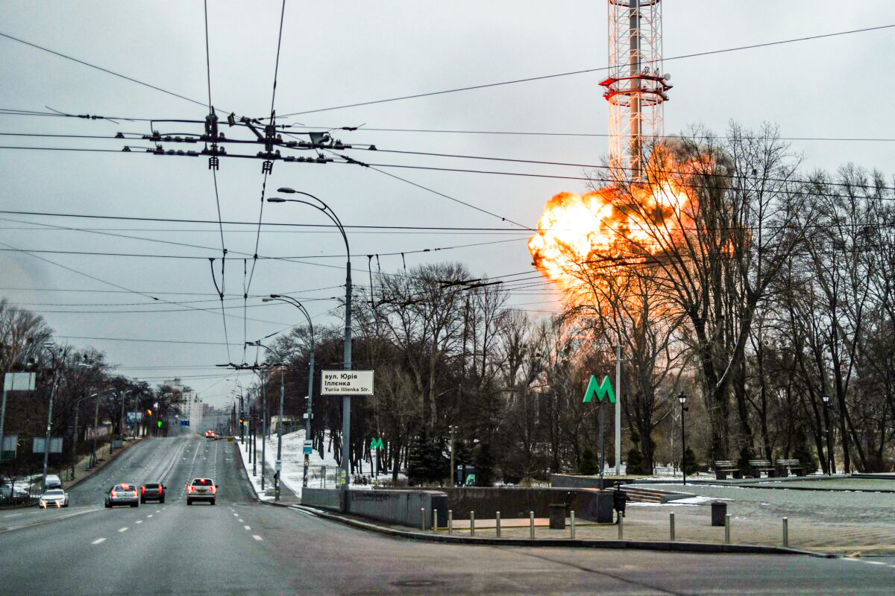
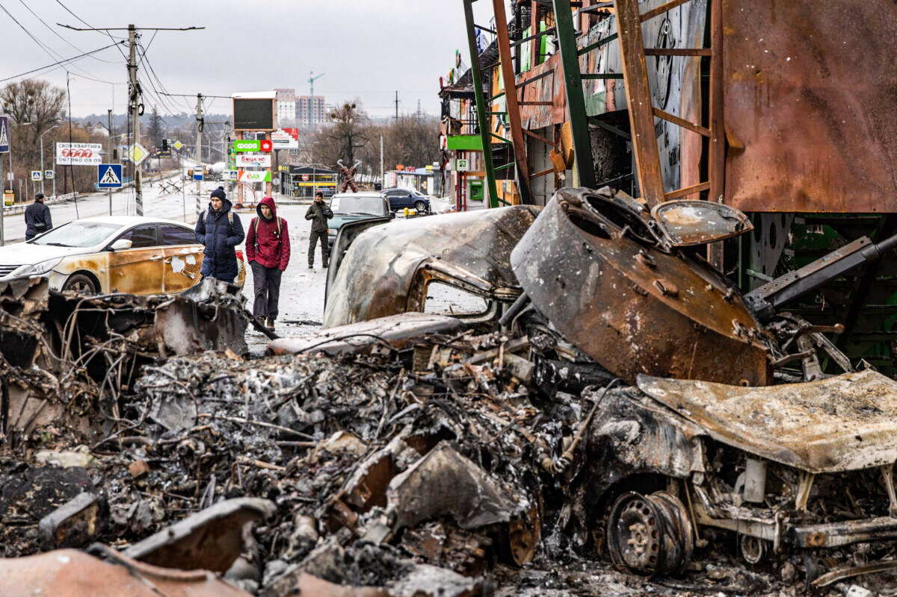

Russian Offensive Continues as War in Ukraine Enters 9th Day
The war in Ukraine has entered its ninth day, with Ukrainian forces continuing to mount staunch resistance to the Russian offensive, which has ramped up its attacks against civilian infrastructure in key cities, while overnight hostilities at a nuclear power plant sparked a fire that was later extinguished with no radiation leak.British intelligence said the southeastern port city of Mariupol remains in Ukrainian control but is surrounded by Russian forces and its civilian infrastructure was being subjected to intense strikes.Russian forces shelled Europe’s biggest nuclear power plant in southern Ukraine in the early hours of Friday, sparking a fire at a training building that was extinguished overnight, UK intelligence and Ukrainian authorities said.Russia’s defense ministry called the attack at the Zaporizhzhia nuclear power plant a “monstrous provocation” by Ukrainian forces, claiming that a Russian patrol came under attack from heavy small arms fire that came from the building and that the “sabotage group” abandoned the training complex, setting fire to it as they left.The Epoch Times has been unable to independently verify either side’s account of the incident.
Russian forces have captured the southern city of Kherson, a key Black Sea port, marking the first major Ukrainian city to fall since Russian President Vladimir Putin ordered the invasion, which he calls a “special military operation” to topple Ukraine’s government and “demilitarize” the country.Heavy fighting continued on the outskirts of Mariupol, another strategic port in southern Ukraine, taking out the city’s electricity, as well as heat and water systems, according to city authorities.“We had 15 main power lines and all of them are now down. We are getting completely cut off—destroyed by artillery. Only the natural gas supply is left,” Mariupol deputy mayor Serhiy Orlov told the BBC on Thursday.“Mariupol is still Ukrainian right now, we still control inside the perimeter, but there is fighting on the streets on the outskirts and we are on the line of a humanitarian crisis,” he added.The United Nations has said around 1 million people have fled Ukraine since Feb. 24, the day Russian forces launched their assault.
Col. Doug MacGregor, a former senior adviser to the U.S. Secretary of Defense, told Fox News that the Russian offensive appears to be entering its final stages, despite staunch resistance by Ukrainian forces. He charted a possible resolution that could see the western part of Ukraine declaring neutrality and existing as a neutral state, while its eastern half would basically fall under Russian control. “Vladimir Putin is carrying through on something that he’s been warning us about at least for the last 15 years, which is that he will not tolerate U.S. forces or their missiles on his borders, much as we would not tolerate Russian troops and missiles in Cuba,” MacGregor said. “We ignored him, and he finally acted,” he continued. “He was not going to allow Ukraine under any circumstances to join NATO.” The battle in eastern Ukraine is “almost over,” he said, adding that all the Ukrainian troops there have been, for the most part, surrounded and cut off from supplies. There was a concentration of between 30,000 and 40,000 Ukrainian troops in the southeast of Ukraine that Russian forces are likely to “annihilate” if they don’t surrender, he predicted. “The game is over and he’s going to have to negotiate the best deal he can get,” MacGregor said of Zelensky, whose representatives have engaged in talks with Russian counterparts on a peace deal, so far with little progress save for agreement on humanitarian corridors. “If he opts for neutrality for Ukraine, we’ll back him,” MacGregor said of Zelensky, adding that he thinks “Vladimir Putin will do that for western Ukraine,” referring to the portion of Ukraine west of the Dniepr river. MacGregor said he’s not sure what Putin’s plans are for the Ukrainian territory east of the Dniepr, flagging the possibility of its annexation into Russia. Delegates from Ukraine and Russia have met in Belarus and agreed on humanitarian corridors that would let civilians flee safely and allow the delivery of humanitarian supplies. A third round of talks is planned for next week.